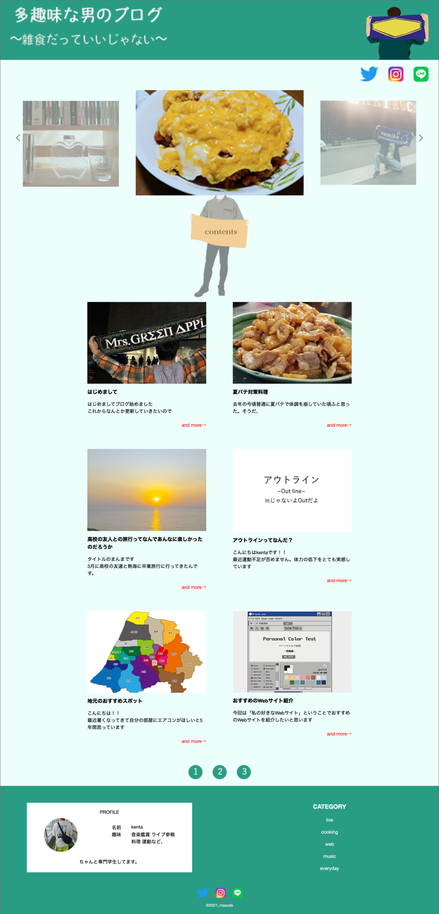
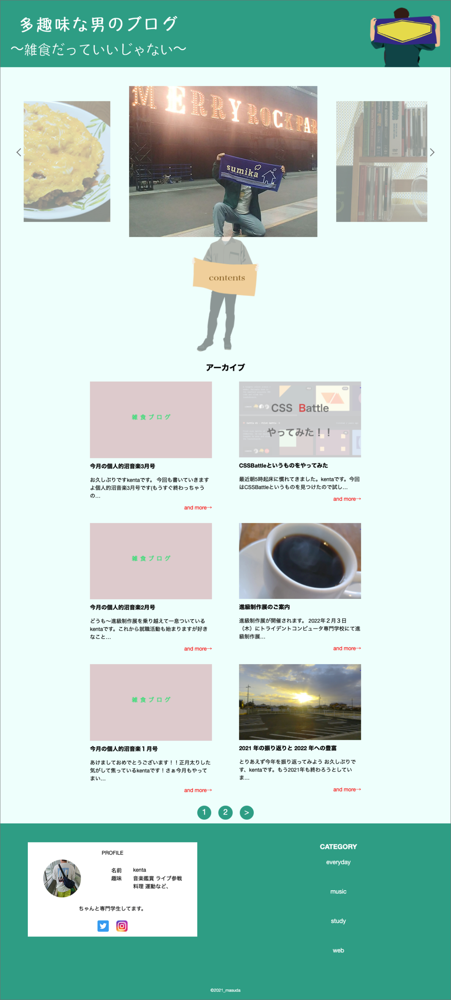

個人ブログ「多趣味な男のブログ」
| 制作期間 | ３ヶ月 |
|---|---|
| 担当箇所 | デザイン、コーディング |
| 制作人数 | 1人 |
| コードはこちら | |
使用技術
- html
- css
- javascript
- jquery
- Visual Studio Code
- Illustrator
- Photoshop
- WordPress
作品概要
1年後期集中授業で自分のブログを作成しました。 WordPressを初めて使用し初めて実践的なwebサイトの構築を行いました。 また、初めてインターネット上に公開した作品になります。
- ワイヤーフレームの作成
- Photoshopを使用してデザインデータの作成
- 夏休みの期間を利用してブログのコーディング作業
- 集中授業機関でCMS(WordPress)の導入
制作の流れ
大変だった点
デザイン案
優柔不断な個所もあり最初のデザイン案で自分の中で納得のいくデザイン案が生まれず周りの同級生と比べても コーディング作業に入るまでにかなり遅れてしまった。
デザインデータ
実際のサイト
コンセプトは勉強の記事だけではなく自分の経験したことを積極的に貪欲に記事にしていきたいという思いから「雑食」にしました。 タイトルにも加えることでその意志をはっきりさせました。
CSM
初めてCSMを使用したサイトに挑戦し、最初はどこから手を付ければいいのか初歩的なところからわからないところが多くとても大変でしたが なんとか乗り越えることができました。 特にphpの知識は最初は何を書いてあるのか、どのような意味でこのコードを書いているの理解ができずとても苦労しましたが、 集中授業で少しですが学び最終的には運用するまでできたのでとても良かったです。
JavaScript
当初はJavaScriptをまだ勉強しておらず、どのようにやればいいかわからなかったです。 自分で調べ、色んなサイトを参考させていただきファーストビューにあるスライドショーを完成させることができました。 またこれからJavaScriptの知識を学んだら自分でこのコードを書けるようにならないとこれからやっていけないと危機感とともに気が引き締まる作品になりました。
作品を通して
とても時間をかけてデザイン案を作成することができたのでデザイン案が完成した時はとても達成感がありそのあとのコーディング作業も大変だったがとても充実感のある サイトに仕上がりました。また、作成当時は習っていなかったJavasucriptにも自分で調べて作成し、最初は全然理解できず大変でしたが、うまくいくときの楽しさは 今でも忘れません。